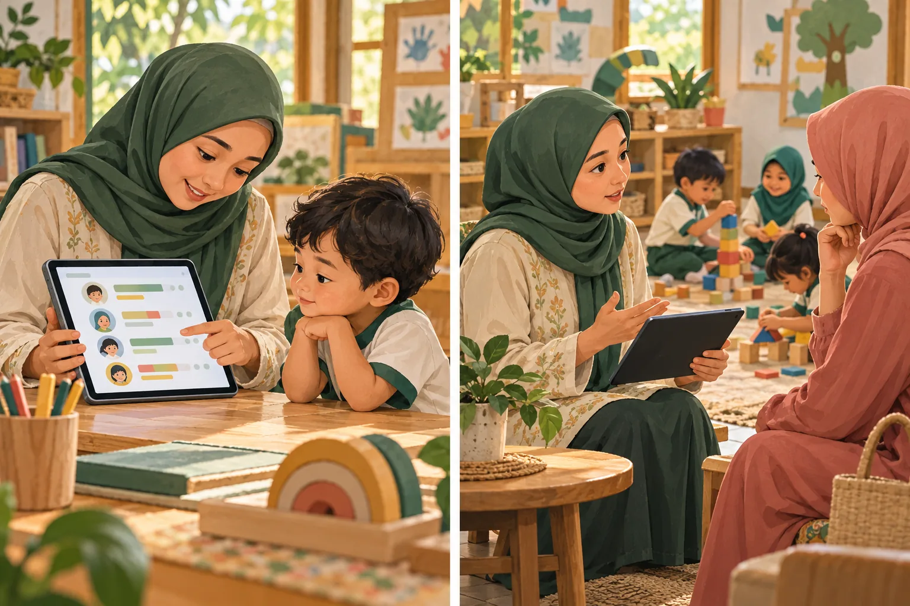
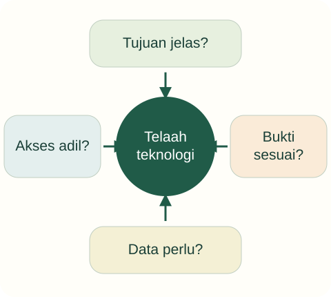

Tujuan pembelajaran
- Mengevaluasi klaim teknologi tanpa menerima atau menolak secara otomatis.
- Membedakan skor aktivitas dari bukti kemampuan yang lebih luas.
- Merancang penggunaan media yang menjaga partisipasi, privasi, dan tujuan belajar.
Apakah pembelajaran yang memakai teknologi selalu lebih baik?

Sebuah aplikasi mengklaim meningkatkan kecerdasan anak dalam satu minggu. Guru ingin memakainya setiap hari karena tampilannya menarik dan tersedia skor otomatis. Orang tua juga meminta foto serta peringkat anak dipublikasikan di grup besar.
- Apakah grafik skor cukup membuktikan klaim sebuah aplikasi?
- Data dan pengalaman anak apa yang perlu dipertimbangkan?
Temukan persoalan konseptual
Sebelum membaca penjelasan, pisahkan kejadian yang dinyatakan dalam kasus dari dugaan Anda. Gunakan pertanyaan berikut untuk menyiapkan analisis.
- Apa tujuan pendidikan yang sedang dipertaruhkan?
- Pengalaman apa yang dialami anak, dan informasi apa yang belum tersedia?
- Konsep atau jenis sumber apa yang diperlukan untuk menilai tindakan pendidik?
Telaah teknologi

Empat pertanyaan dalam diagram adalah panduan telaah pedagogis, bukan daftar lengkap kewajiban hukum perlindungan data. Klaim efektivitas perlu bukti yang sesuai, bukan hanya tampilan menarik.
Keputusan mempertimbangkan tujuan, bukti, data, dan akses; skor bukan gambaran lengkap anak.
Perubahan sosial dan tuntutan lembaga
Teknologi, pekerjaan keluarga, arus informasi, serta persaingan lembaga memengaruhi harapan terhadap PAUD. Tidak semua perubahan harus diikuti dengan menambah program. Pendidik perlu bertanya masalah apa yang hendak diatasi, siapa yang memperoleh manfaat, dan kebutuhan apa yang mungkin terabaikan.
Klaim seperti sekolah modern atau anak unggul tidak cukup untuk menilai kualitas. Periksa pengalaman yang benar-benar tersedia. Jika kegiatan baru mengurangi waktu percakapan dan bermain tanpa tujuan jelas, manfaatnya perlu dipertanyakan. Analisis ini berlaku pada media digital maupun nondigital.
Memeriksa klaim efektivitas
Kata meningkatkan harus diikuti pertanyaan: meningkatkan apa, dibandingkan dengan apa, diukur bagaimana, dan pada siapa? Skor permainan dapat mencerminkan kemampuan mengoperasikan aplikasi atau mengingat pola soal, belum tentu pemahaman yang dapat digunakan di situasi lain. Testimoni pengguna bukan pengganti penelitian yang sesuai.
Mahasiswa dapat membuat tabel klaim dan bukti. Tuliskan apakah sumbernya promosi, laporan pengalaman, pedoman profesi, atau artikel penelitian. Bila bukti belum tersedia, nyatakan ketidakpastian. Tidak perlu membuat kesimpulan bahwa produk pasti buruk; keputusan dapat berupa uji terbatas dengan tujuan serta kriteria yang jelas.
Media sebagai bagian pengalaman
Usulan pemilihan media adalah menilai tujuan, kualitas isi, akses, pendampingan, dan kegiatan lanjutannya. Video singkat tentang hujan dapat menjadi pemantik percakapan dan pengamatan, tetapi menonton saja tidak menjamin pemahaman. Guru dapat menghubungkan media dengan pengalaman anak dan menghindari waktu pasif yang tidak diperlukan.
Portal ini tidak memberikan batas waktu layar sebagai anjuran kesehatan karena memerlukan pedoman sesuai usia dan konteks. Fokus pendidikan adalah alasan penggunaan serta pengalaman yang digantikan atau diperluas. Pilih alternatif nondigital jika memberi pengalaman yang lebih sesuai atau lebih mudah diakses.
Privasi dan profesionalisme digital
Foto, nama, hasil karya, serta catatan perkembangan anak memerlukan perlakuan hati-hati. Untuk latihan mahasiswa, gunakan kasus rekaan dan hindari identitas anak. Publikasi nyata mengikuti persetujuan, kebijakan lembaga, serta ketentuan yang berlaku. Persetujuan untuk dokumentasi internal tidak otomatis berarti persetujuan untuk penyebaran publik.
Budaya lingkungan aman juga mencakup perhatian terhadap ruang digital (Permendikdasmen 6/2026, sesuai lingkupnya). Secara pedagogis, peringkat publik dapat mempersempit cara melihat perkembangan. Informasi untuk keluarga sebaiknya terkait kemajuan dan dukungan, bukan mempermalukan atau membandingkan anak secara sederhana.
Kembali ke kasus
Klaim kecerdasan perlu bukti yang menjelaskan konstruk dan pengukurannya. Skor otomatis tidak cukup. Publikasi identitas dan peringkat merupakan keputusan berbeda yang perlu pertimbangan privasi serta tujuan komunikasi, bukan mengikuti permintaan tanpa pemeriksaan.
Analisis ini merupakan contoh penalaran pedagogis. Pada situasi nyata, keputusan memerlukan informasi tentang anak dan konteks lembaga.
Satu kasus, dua cara merespons
Gunakan teori pada materi di atas untuk memeriksa alasan dan akibat yang mungkin muncul. Alternatif ini merupakan contoh telaah, bukan resep untuk semua anak.
Menerima klaim pemasaran
Menggunakan skor aplikasi sebagai peringkat umum kemampuan anak.
Validitas skor, akses keluarga, dan kebutuhan data belum diperiksa.
Menilai sebelum menggunakan
Memeriksa tujuan, bukti, kebutuhan data, dan alternatif tanpa perangkat.
Putuskan penggunaan terbatas atau tidak menggunakan berdasarkan hasil telaah.
Dari melihat ke beralasan
Sebutkan dua informasi yang harus tersedia sebelum merekomendasikan aplikasi pada kasus ini.
Buka contoh penalaran setelah mencoba
Contoh: bukti bahwa alat sesuai tujuan dan usia pengguna, serta data apa yang dikumpulkan dan siapa yang dapat mengaksesnya. Skor otomatis tidak cukup untuk mendiagnosis atau memberi peringkat kemampuan umum.
Dasar konsep dan sitasi: baca materi inti serta referensi unit ini. Adegan dan alternatif merupakan penerapan ilustratif penyusun.
Latihan terbimbing
Analisis satu klaim promosi rekaan: “anak pasti kreatif setelah tiga permainan”. Tandai kata yang terlalu mutlak, konstruk yang tidak dijelaskan, serta bukti yang perlu diminta.
Latihan mandiri
Bandingkan media digital dan kegiatan benda nyata untuk satu tujuan. Tulis alasan pilihan, kebutuhan pendampingan, akses, bukti belajar, dan pengelolaan dokumentasi tanpa identitas anak.
- Konsep digunakan dengan tepat dan dijelaskan hubungannya dengan kasus.
- Fakta dipisahkan dari interpretasi; sumber mendukung jenis klaimnya.
- Tindakan konkret, menghargai anak, dan memiliki cara peninjauan.
Lihat pembahasan
Informasi kinerja pada aktivitas tertentu yang perlu ditafsirkan sesuai konteks.
Kesimpulan harus sebanding dengan cakupan pengukuran. Transfer ke kemampuan lain memerlukan bukti tambahan.
Refleksi calon pendidik
Apakah saya memilih teknologi karena membantu anak belajar atau karena terlihat mutakhir?
Catatan hanya disimpan di peramban ini. Tidak dikirim kepada dosen.
Intisari dan tindak lanjut
- Teknologi dinilai dari tujuan, mutu isi, akses, dan pengalaman yang ditawarkannya.
- Skor aktivitas tidak otomatis mewakili kemampuan umum atau transfer belajar.
- Dokumentasi dan publikasi identitas anak memerlukan pertimbangan privasi tersendiri.
Uji kembali pemahaman di atas melalui latihan mandiri. Jika alasan Anda belum menghubungkan konsep dan tindakan, baca ulang submateri terkait sebelum menandai selesai.
Referensi dan bacaan pendamping
Sumber untuk klaim khusus disebut pada uraian. Buku pendamping tidak dikutip langsung. Jenis dan batas penggunaan setiap rujukan dijelaskan di bawah.
- Kementerian Pendidikan Dasar dan Menengah. (2026). Peraturan Menteri Pendidikan Dasar dan Menengah Nomor 6 Tahun 2026 tentang Budaya Sekolah Aman dan Nyaman.Rujukan lingkungan aman. Jangan memindahkan mekanisme kelembagaan TK ke RA tanpa membaca lingkup dan kebijakan Kemenag.
- Kementerian Pendidikan, Kebudayaan, Riset, dan Teknologi. (2022). Peraturan Menteri Pendidikan, Kebudayaan, Riset, dan Teknologi Nomor 21 Tahun 2022 tentang Standar Penilaian Pendidikan pada Pendidikan Anak Usia Dini, Jenjang Pendidikan Dasar, dan Jenjang Pendidikan Menengah.Rujukan penilaian yang ditemukan dalam penelusuran. Ketentuan penilaian dalam Permendikbud 137/2014 telah dicabut melalui peraturan ini.
- National Association for the Education of Young Children. (2022). Developmentally appropriate practice in early childhood programs serving children from birth through age 8 (4th ed.).Buku utama pendamping. Cakupan sampai usia 8 tahun berbeda dari definisi yuridis PAUD Indonesia; tidak direproduksi di portal.